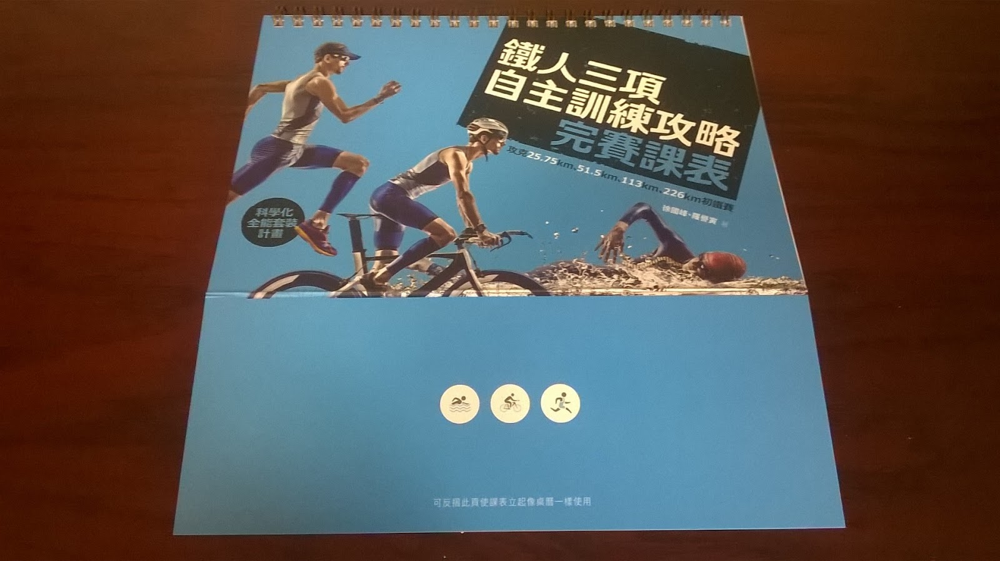
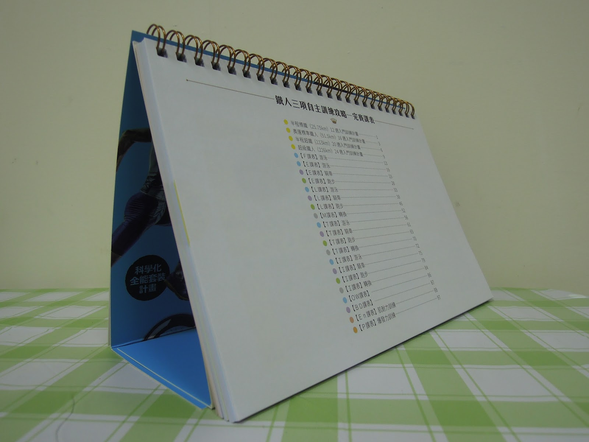
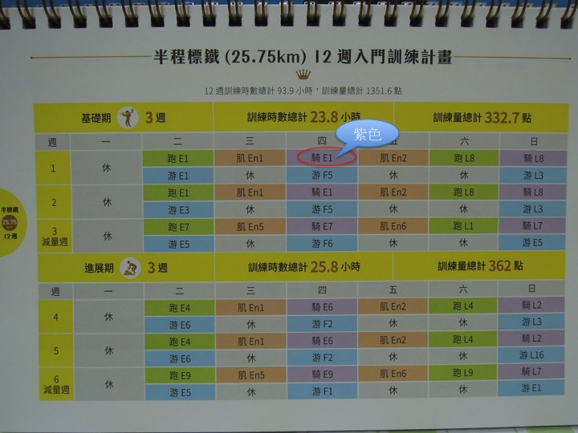
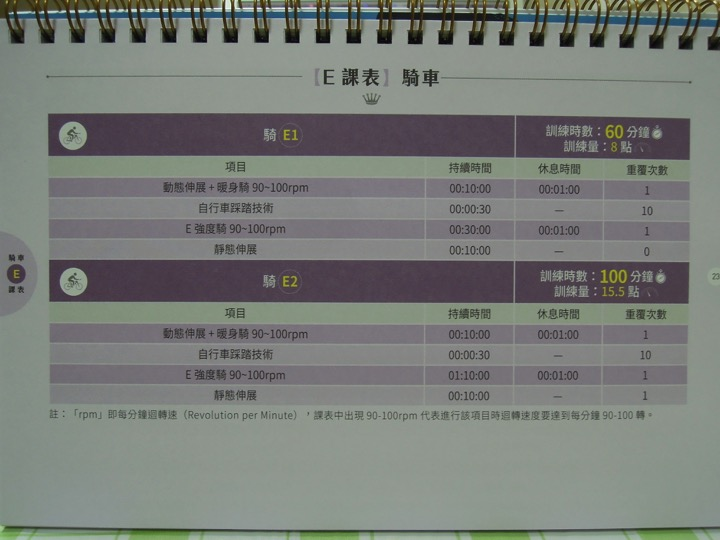
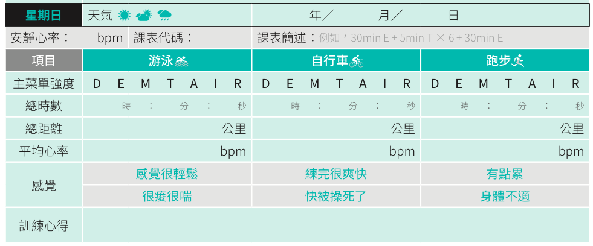
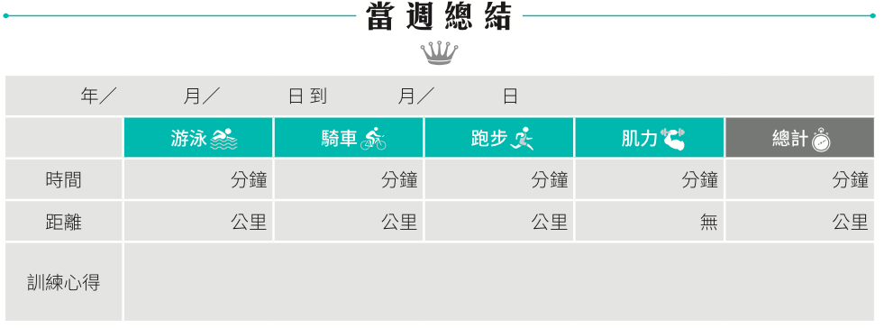
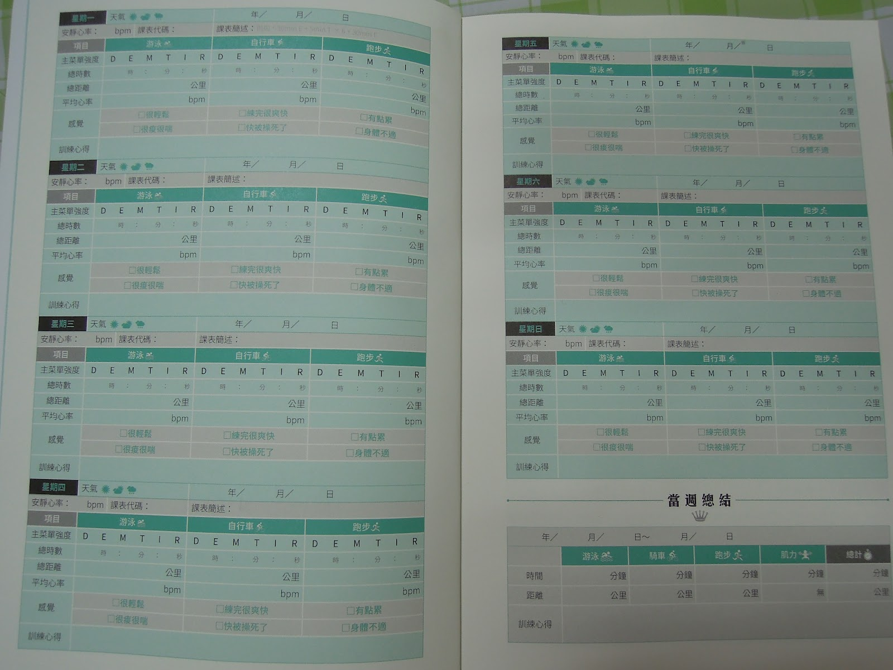
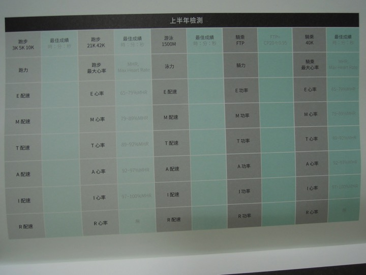
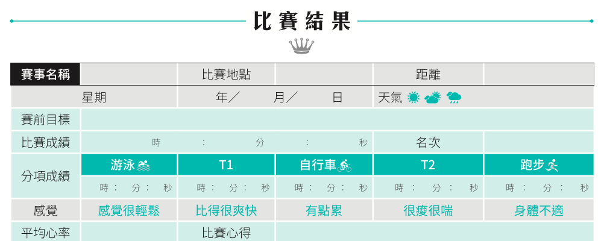

《鐵人攻略》不只是「書」，而是一套有關鐵人三項的「作品」
一開始跟譽寅在捷運上談起《鐵人三項自主訓練攻略》的書寫計畫時，我就不把它定位為「書」，而是一套有關鐵人三項的「作品」 ，這份作品是專為四種距離的「初鐵挑戰者」設計的。
這部作品的發想來純粹來自於賽場上多次被問到的問題，賽前賽後常被鐵友們攔下來問：「國峰教練，我要練多久才能完成一場 226？」「113 該怎麼練？」「可不可以幫我開一份 51.5 課表？」這些熱切的詢問，讓我在這幾年一直構思要怎麼才能解決他/她們的問題？
在譽寅的大力協助下，終於完成本作品，它就是我給這些賽場上鐵友的回應，希望能彌補賽場上無法具體向你們表達清楚的遺憾。每次答不出來，都會掛在我的心頭使我心不安，此作品出版後讓我安心多了。
《完賽課表》
《鐵人三項自主訓練攻略》由三本小冊組成，全部設計的主軸在於以線圈設計的《完賽課表》這一冊 。其中有「初次 25.75」、「初次 51.5」、「初次 113」與「初次 226」的訓練計畫與課表，在肌力模組，同時也為因應個人條件不同，提供增刪課表內容的依據。
當初就是設計《完賽課表》是想做成防水材質，方便鐵人們盡情揉躪，但後來因為廠商提供的防水材質與需求不盡相符，改往桌歷的方向思考。

把冊子的「勒口」往封面外側折(因為是特別強化過的高磅數紙張)，再把書封往後翻就能可以立起來放到桌上，藉此提醒自己每天的訓練課表，也便於翻閱。這是臉譜出版社的巧思！

除此之外，另一個巧思是分別在四種距離訓練計畫中的「游」、「跑」、「騎」、「肌力」、「休息」分別都使用統一的顏色：
游泳 | 騎車 | 跑步 | 肌力 | 休息
---|---|---|---|---
藍色 | 紫色 | 綠色 | 橘色 | 灰色


註：休息是訓練的一部分

這些不同的色調，也被利用在後面的單項課表裡頭。像是紫色代表自行車項目，翻到後面的自行車課表就會看到紫色頁面。

開頭英文字母分別表示不同訓練目的的課表：
- E：意指輕鬆(Easy)課表
- L：意指長距離訓練(Long)課表
- M：意指馬拉松配速(Marathon)課表
- T：意指乳酸閾值(Threshold)課表
- I：意指最大攝氧量間歇(Interval)課表
- R：意指高速反覆(Repetion)課表
- F：意指調動作(Form)課表
- OW：意指開放式水域(Open Water)課表
- BD：意指超長日(Big Day)課表，這是專為 226 挑單者設計的
- EN：意指肌耐力(Endurance)課表
- P：意指爆發力(Power)課表
使用說明影片：
《關鍵心法》
這些課表的詳細意義與目的，都在另一冊《關鍵心法》之中，裡頭是鐵人三項訓練計畫設計的理論與原則。也就是說，另外兩本手冊，包括完賽課表與鐵人日誌都是以關鍵心法為基礎所設計出來的。三本手冊必須互相搭配使用，才能達成自主訓練的最佳效果，讓每初鐵挑單者都能做自己的教練，也讓讓你不僅了解課表設計的理論基礎，同時能夠「先跟著」一個有嚴謹科學背景的課表來訓練、最後再將自己實際訓練情形詳實紀錄，並能隨時檢視訓練進展。從初鐵班「之後」就能自己來為自己開課表了。
《鐵人日誌》
最後介紹第三本小冊，《鐵人日誌》，它共涵蓋了四個部分：
- 訓練日誌：幫助你紀錄「每天」訓練的天氣、三項強度、時數、距離、心率、自我感覺與心得。

- 週總結：也就是紀錄每週的總訓練量，包括總距離、總時間、還可以寫上本週訓練的自我反省。

每一頁翻開都剛好是一個星期的紀錄份量：

- 能力與訓練強度檢測紀錄表：紀錄你半年來各種距離的跑步能力、及游泳與騎車的能力。這些能力都是量化數據，所以可以被拿來客觀比較。

- 完賽結果紀錄表：紀錄比賽地點、距離、天氣、目標成績、心率、分項成績、自我體感與心得檢討。

==《鐵人三項自主訓練攻略》新書分享會==
主講│徐國峰、羅譽寅（本書作者）
自由入場
【台北場】
時間：12/27（六）19:30pm-21:00pm
地點：誠品台北信義店 (台北市信義區松高路 11 號 3F Forum)
自由入座
【台中場】
時間：12/28(日)15:00～16:00
地點：誠品台中園道店 (台中市西區公益路 68 號 3F(勤美誠品綠園道))
【分享會內容簡介】
有不少讀者因為作者徐國峰在 2010 年出版的《鐵人三項》這本書，開始邁入鐵人三項的世界。現在，作者希望更進一步把科學化訓練的方式，分享給更多喜歡耐力運動的朋友，替想要挑戰「初標鐵」或「初超鐵」的讀者，排了一份三鐵入門課表，讓他們先透過本書建立基本的科學化訓練知識，再親身體驗這些知識所帶來的成效，一步步邁入鐵人生活。
主辦單位│臉譜出版
參加方式│自由入場
聯絡電話│02-2500-7696*2717
詳細資訊